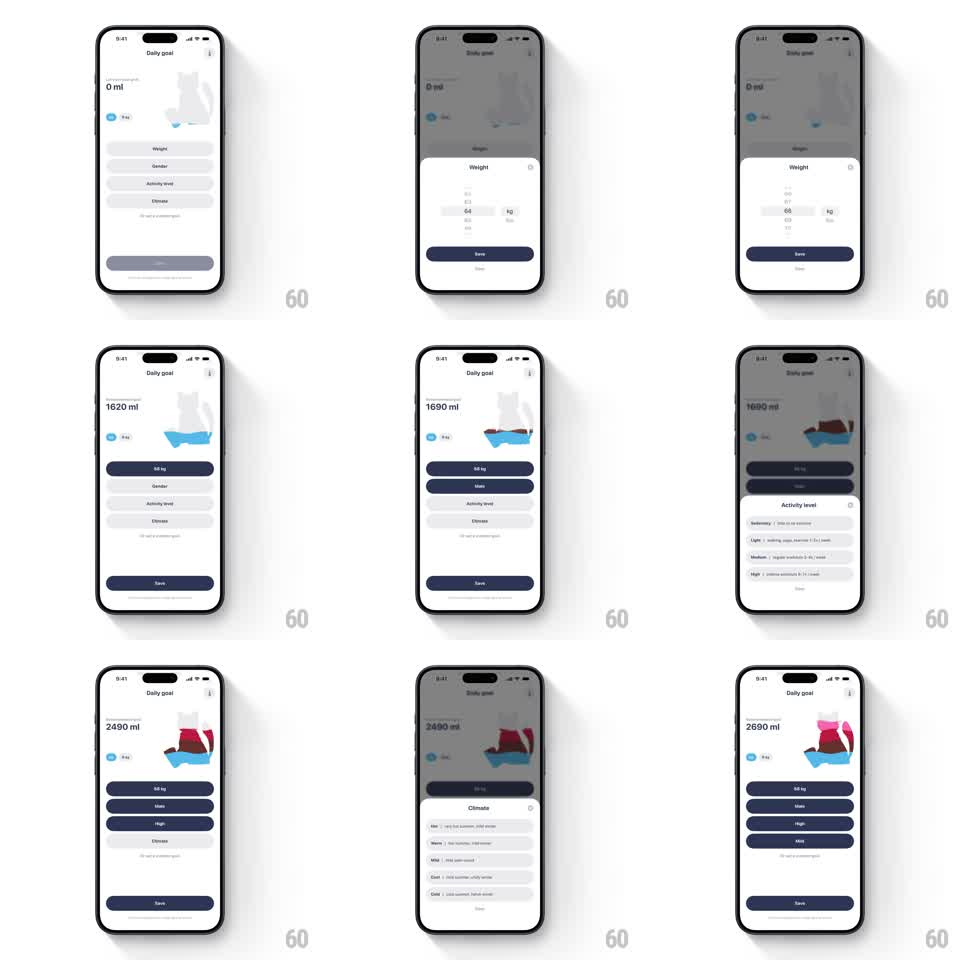

Media
Frame-by-frame

Rebuild this interaction 1:1: Liquid Cats' daily-goal setup - each answered onboarding question (weight, gender, activity level, climate) pours a new colored liquid layer into the cat container while the computed daily-goal total climbs.

Rebuild this interaction 1:1: Liquid Cats' daily-goal setup - each answered onboarding question (weight, gender, activity level, climate) pours a new colored liquid layer into the cat container while the computed daily-goal total climbs.
## Integration
Integration: stack-agnostic spec - springs given as stiffness/damping, timed motions as duration + curve; map every value to your framework and animation library of choice.
## Scene
"Daily goal" screen: a cat-silhouette container beside the current total ("0 ml" growing to "2690 ml"), a vertical list of parameter rows (Weight, Gender, Activity level, Climate) that become filled dark pills once answered, and a Save button. Each row opens its own bottom-sheet picker (weight roller in kg, gender choices, activity list, climate list).
## Motion spec
Pattern: progressive layered liquid fill per answered question, ~800ms each.
- Picker: bottom sheet slides up (spring ~320/26); selecting a value highlights the row (150ms) and Save confirms.
- Layer pour: on confirm, a new liquid layer pours into the cat from the top (600ms, ease-out) in that parameter's color (water blue, rose, red-brown, pink), stacking on previous layers with a wavy boundary that settles flat (decay 800ms).
- Total: the ml readout counts up to the new cumulative goal (500ms) in sync with the pour.
- Row state: the answered row morphs from gray placeholder to filled dark pill (200ms), the next unanswered row taking focus with a subtle highlight pulse.
## Calibration
- Layers stay distinct colors - they don't blend into one gradient.
- The cat fill order is bottom-up per layer; later layers stack above earlier ones.
## Reduced motion
Each answer steps the fill and total with a 200ms cross-fade; no pour or slosh.
## Don't miss
- The final total (2690 ml) matches the sum of the four parameter contributions.
- Unanswered rows stay visibly empty so progress reads at a glance.